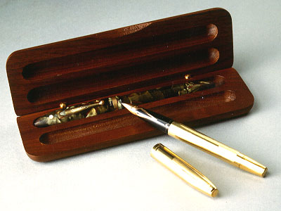

義助慰安婦 —— 李敖百件珍藏義賣藝術品（第97件） 品 名： I10. 李鼎彝與李敖父子檔老鋼筆（兩件一盒） 預估價： 20 萬 成交價： 24 萬 說 明： 這兩支老西華鋼筆，筆帽上皆有白色班點。一支斑紋筆，李敖父親用了八十年；另一支金桿筆，李敖一直使用到牢裡，用了四十年。寫鋼筆字可寫出宇型及個性來。民進黨秘書長邱義仁喜收集鋼筆，不過李敖不希望邱義仁或日本人買到這對筆。 
這兩支老西華鋼筆，筆帽上皆有白色班點。一支斑紋筆，李敖父親用了八十年；另一支金桿筆，李敖一直使用到牢裡，用了四十年。寫鋼筆字可寫出宇型及個性來。民進黨秘書長邱義仁喜收集鋼筆，不過李敖不希望邱義仁或日本人買到這對筆。